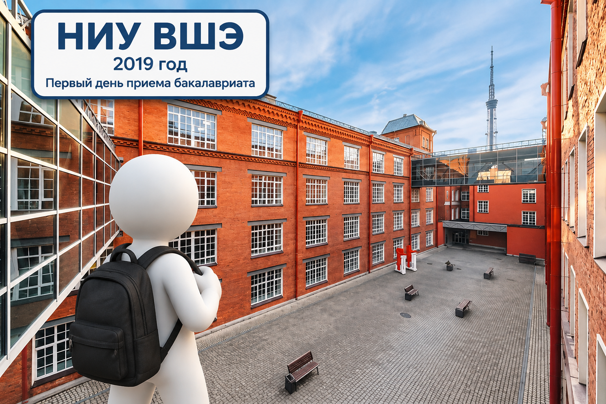
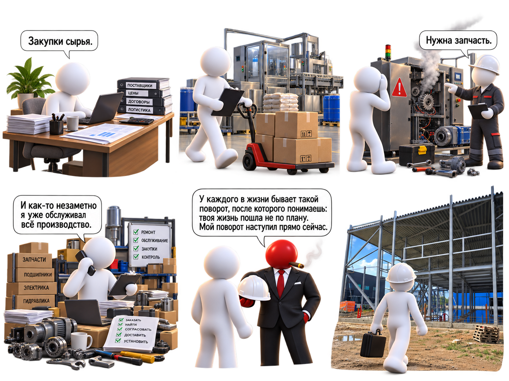
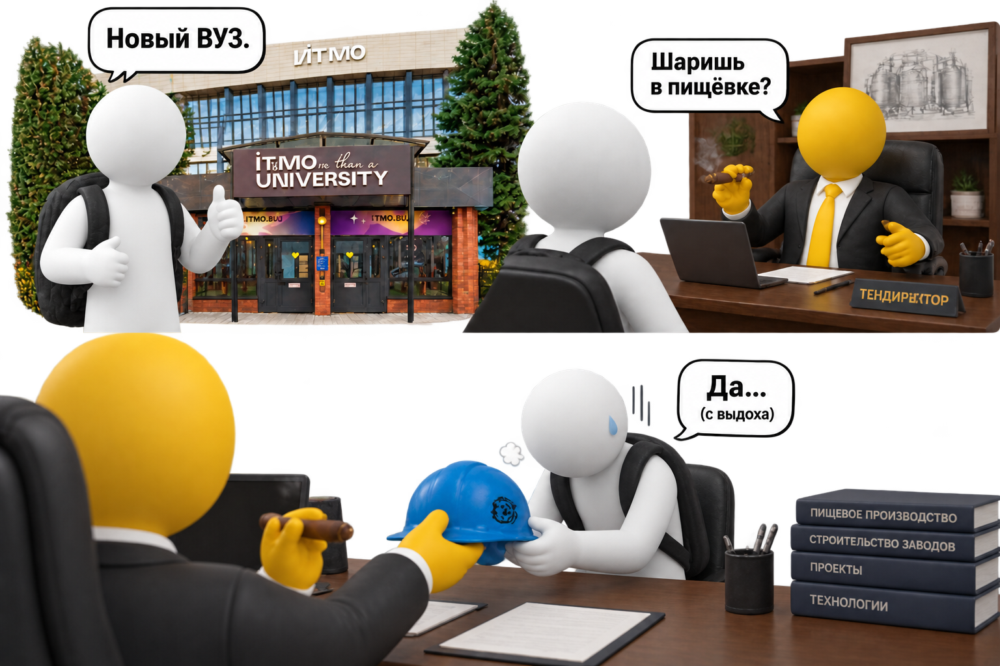

Обо мне
История пути от университета и первых проектов до производства, строительства и новых этапов развития.
Пролог
Если бы в 2019 году мне сказали, что через несколько лет я буду разбираться в производстве, оборудовании, строительстве заводов и управлении высокотехнологичным бизнесом — я бы, скорее всего, не поверил.
План был намного проще:
университет → диплом → работа → нормальная взрослая жизнь.
Без каски.
Без стройки.
Без вопросов:
«Почему опять остановилось оборудование?»
Но получилось немного иначе.
Начало истории
В 2019 году я поступил в НИУ ВШЭ на направление «Международный менеджмент».
Тогда всё выглядело максимально логично.
Хороший университет.
Интересная специальность.
Понятный маршрут.
Казалось, что дальше всё будет просто:
учёба → диплом → работа.

Первый опыт
Потом пришёл ковид.
Университет переехал в экран.
Пары, встречи и обсуждения — всё через Zoom.
И постепенно стало понятно, что хочется увидеть, как всё работает за пределами лекций и презентаций.
Так появился первый опыт работы.
От закупок к производству
Начинал я как менеджер по закупкам.
Задачи были понятные:
- сырьё;
- поставщики;
- сроки;
- документы;
- переговоры.
Но производство быстро расширило круг задач.
Постепенно пришлось разбираться в оборудовании, запчастях и технических процессах.

Первый большой поворот
В какой-то момент закончился первый большой этап.
Я ушёл из ВШЭ.
Параллельно закончилась первая работа.
Возникли сложности во взаимодействии с руководством.
В итоге этот этап пришлось закрыть и двигаться дальше.
Новый университет. Новая работа. И снова стройка.
Чтобы совмещать учёбу и работу, я выбрал заочную форму обучения.
Так появился Санкт-Петербургский университет технологий управления и экономики.
Направление:
Финансовый менеджмент.
Но была одна проблема.
Я снова попал на стройку.
Хотя я этого не хотел.
Завершение второго этапа
Вторая стройка постепенно подошла к концу.
Завершился ещё один большой проект.
Закончился этап обучения в СПбИТУиЭ.
Послание от шефа
Перевод с управленческого:
Объект построен.
Задача выполнена.
Спасибо за участие.
Дальше команда продолжает без вас.

ИТМО и третий завод
После этого начался следующий этап.
Я поступил в ИТМО на программу:
«Управление высокотехнологичным бизнесом».
И снова вернулся к производству.
За это время были:
- закупки;
- производство;
- оборудование;
- две стройки;
- запуск объектов;
- работа с разными командами.
А впереди был новый проект — строительство пищевого производства.
Что осталось после этого пути
Если посмотреть назад, маршрут получился необычным.
Я начинал с менеджмента и экономики, а потом постепенно оказался там, где вместо учебных кейсов были реальные производства, оборудование и строительные площадки.
Я увидел производство изнутри и понял, как решения влияют на реальный процесс.
Получил опыт строительства производственных объектов и работы с людьми разных профессий.
Сейчас этот маршрут выглядит так:
международный менеджмент → финансовый менеджмент → производство → оборудование → стройки → управление высокотехнологичным бизнесом.
Не самый прямой путь.
Но теперь я понимаю не только, как проект выглядит на бумаге, а как он работает в реальности.